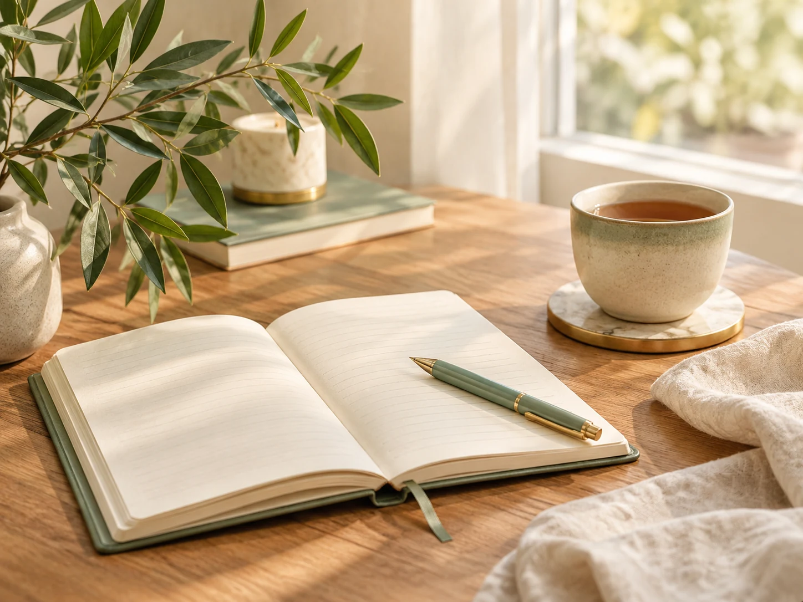
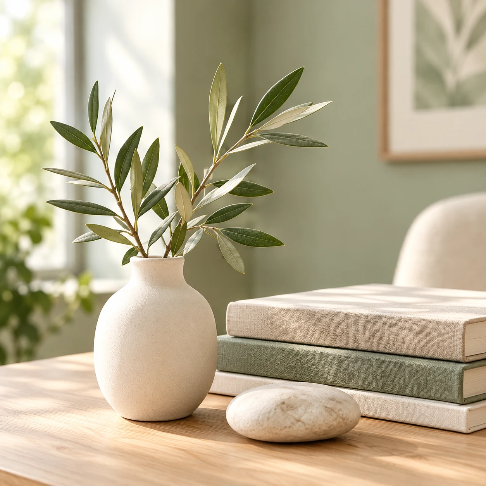
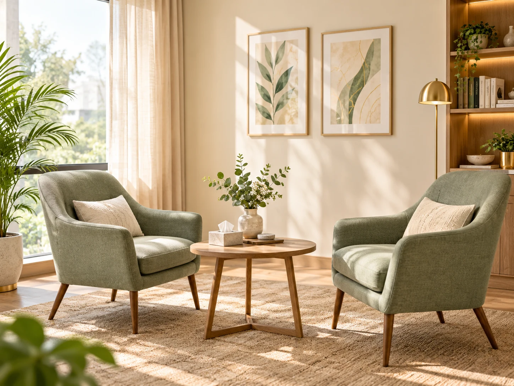
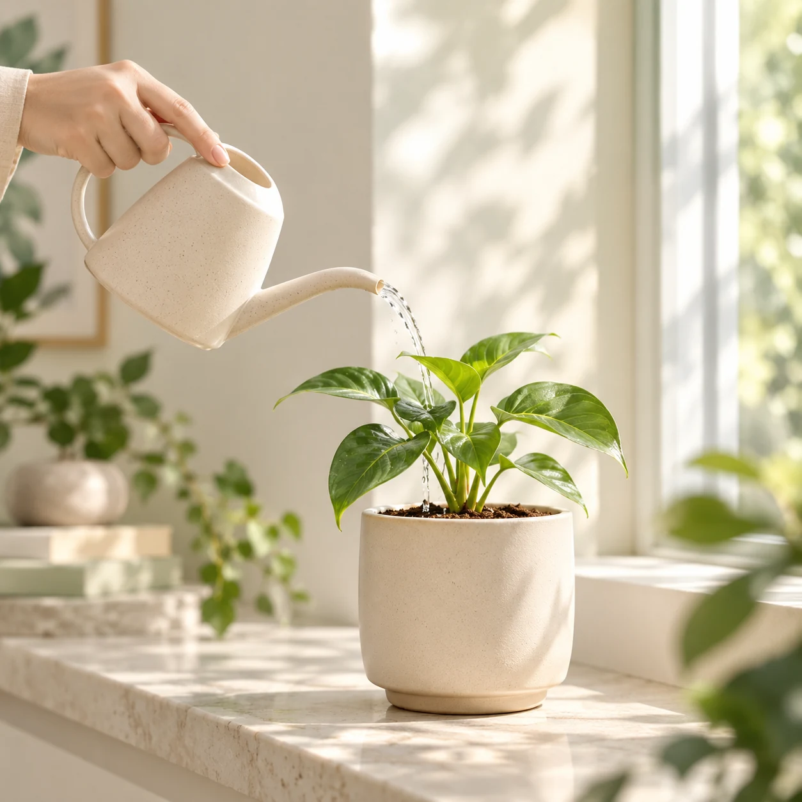
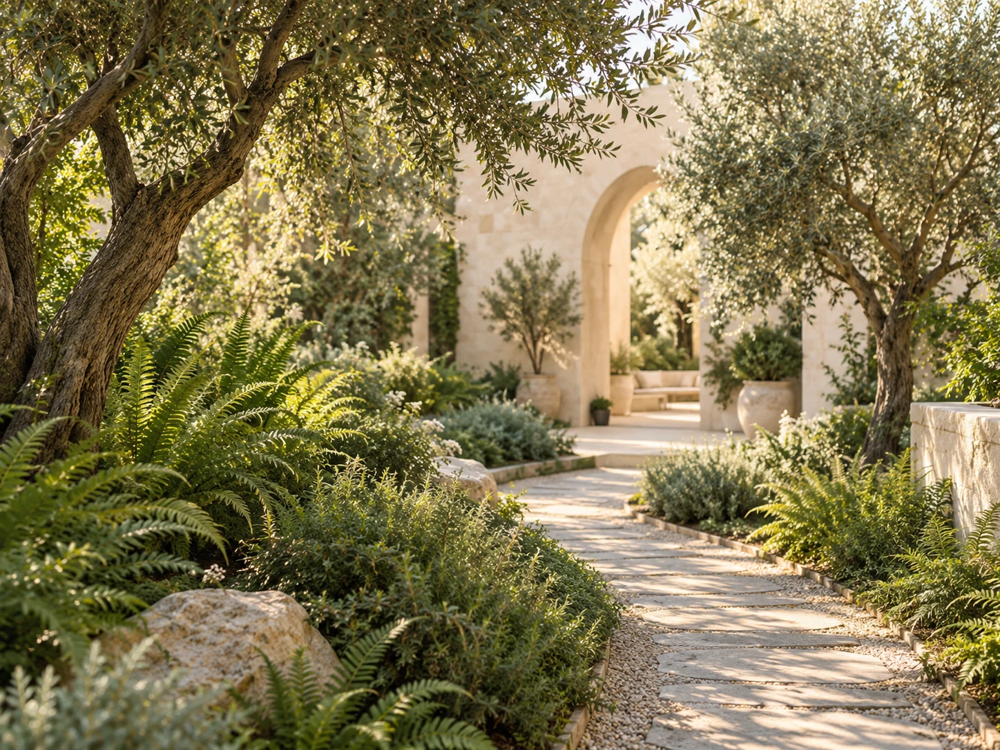
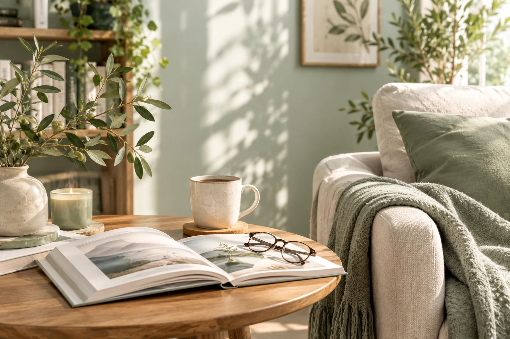
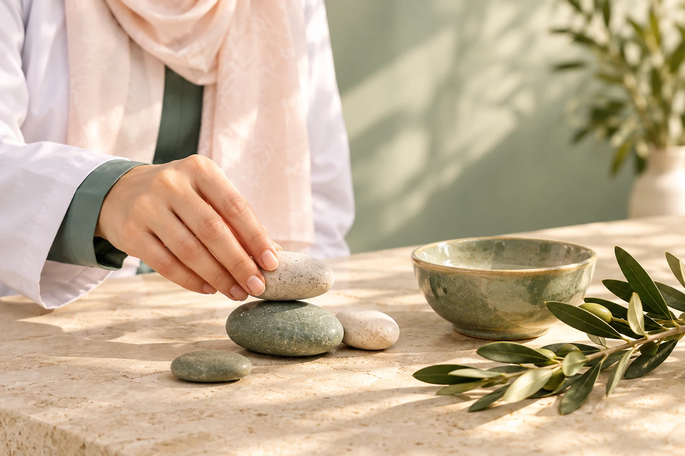
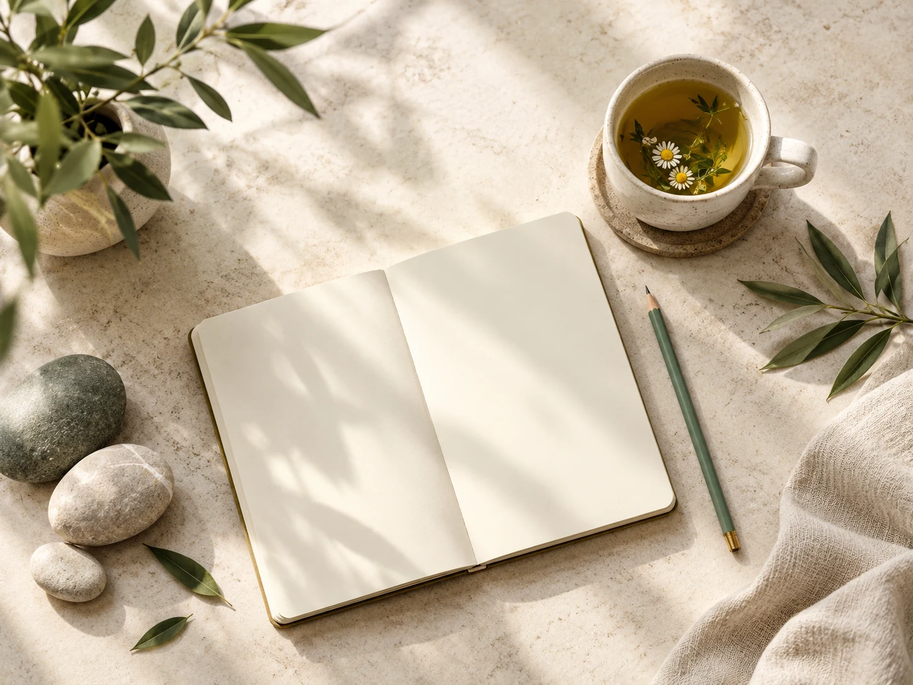
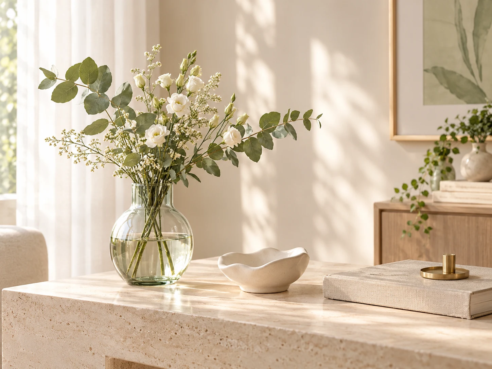

01
INNER AWARENESS
الوعي بالنفس
التعرّف على مشاعرنا وأنماطنا، وملاحظة ما نحتاجه دون قسوة أو لوم.
اكتشفي المزيد ←مساحة هادئة للوعي النفسي، وفهم العلاقات، والتربية برحمة أكبر — خطوة صغيرة نحو حياة أكثر اتزانًا.
حين نفهم قصصنا القديمة، نستطيع أن نختار بوعيٍ أكبر ما نأخذه معنا إلى الغد.
✳
هذه المساحة مخصّصة للأفكار والأسئلة التي نعيشها كل يوم: كيف نفهم أنفسنا؟ كيف نبني علاقة صحية؟ وكيف نمنح أبناءنا مساحة آمنة للنمو؟
لا نبحث عن الكمال، بل عن وعي يساعدنا على اتخاذ خطوات أكثر لطفًا ووضوحًا.
تابعي المحتوى على إنستغرام ↗كل رحلة تبدأ بسؤال صغير، وبالرغبة في رؤية الأمور من زاوية مختلفة.

01التعرّف على مشاعرنا وأنماطنا، وملاحظة ما نحتاجه دون قسوة أو لوم.
اكتشفي المزيد ←
02حدود واضحة، تواصل أهدأ، ومساحة نحاول فيها فهم بعضنا بصورة أفضل.
اكتشفي المزيد ←
03نرافق أبناءنا بالتفهّم والاتصال، ونتذكّر أن التعلّم يبدأ من الكبار أيضًا.
اكتشفي المزيد ←
لسنا مضطرين إلى حمل كل شيء معنا.
يمكننا أن نفهم، ثم نختار.
أحيانًا يبدأ التغيير بلحظة انتباه، أو سؤال صادق، أو اختيار مختلف في موقف صغير. امنحي نفسك وقتًا لتتعلمي وتجرّبي وتعودي من جديد.
ابدئي رحلة الوعي ↗

بهدوءأفكار بسيطة تساعدك على التوقّف قليلًا، والتنفس، وملاحظة ما يدور داخلك.

ليس عليكِ حل كل شيء الآن. أحيانًا يكفي أن تلاحظي ما تشعرين به دون استعجال.
سمّي الشعور كما هو، دون أن تحكمي عليه أو تحاولي تغييره فورًا.
خذي نفسًا هادئًا واسألي نفسك ما الذي قد يمنحك دعمًا في هذه اللحظة.
اختاري خطوة واقعية ولطيفة بدلًا من مطالبة نفسك بتغيير كل شيء مرة واحدة.
تابعي الأفكار والمحتوى حول الوعي النفسي والتربية والعلاقات.
تواصلي عبر إنستغرام ↗ ✳